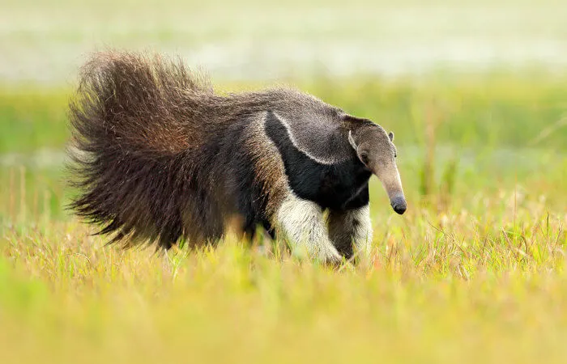
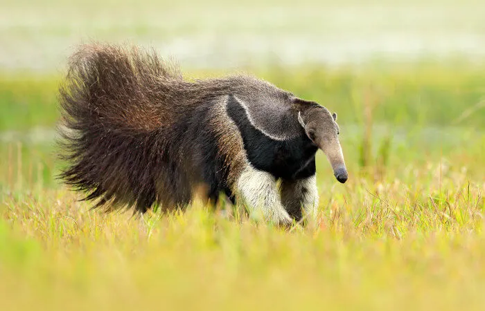

Myrmecophagidae
 

Tamanduá é o nome dado a um grupo de animais vertebrados da classe Mammalia e que pertencem à superordem Xenarthra, à ordem Pilosa e estão distribuídos em duas famílias, a Cyclopedidae e Myrmecophagidae. Os animais pertencentes à superordem Xenarthra encontram-se distribuídos, principalmente, pela América Central e América do Sul. Atualmente, são conhecidas quatro espécies de tamanduás, entre essas, três são encontradas no Brasil.
Atualmente, são conhecidas quatro espécies de tamanduás: o tamanduá-bandeira (Myrmecophaga tridactyla), tamanduá-mirim (Tamandua tetradactyla), tamanduaí (Cyclopes didactylus) e o tamanduá-do-norte (Tamandua mexicana). Entre essas quatro, apenas o tamanduá-do-norte não está presente no Brasil. A seguir, destacaremos algumas características das espécies encontradas no Brasil.